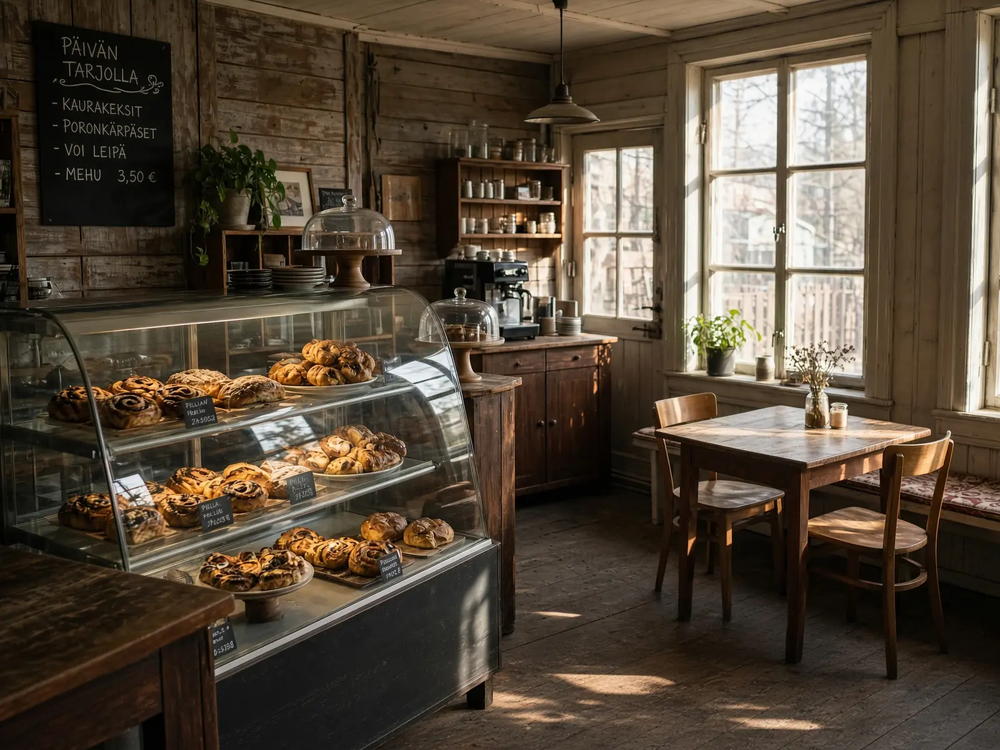
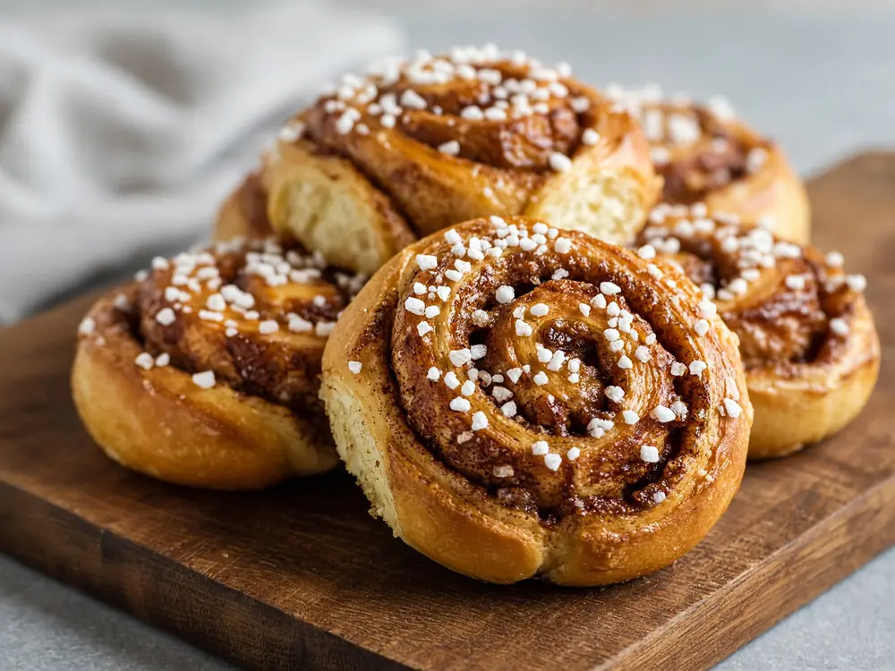
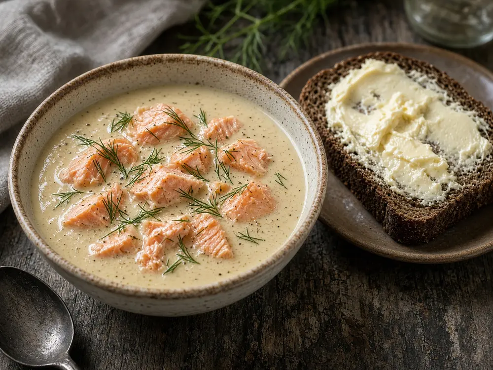
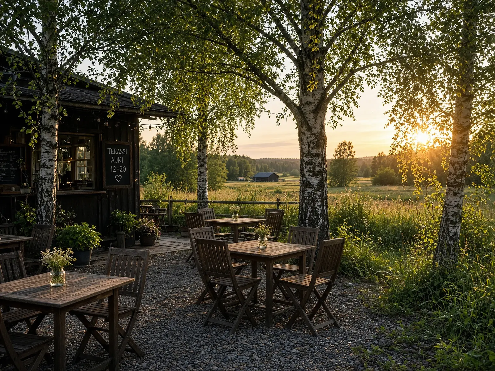

Coffee and lunch in an old wooden house
Buns baked every morning, soup at lunchtime, and a terrace for summer evenings.


The terrace

Open from May to September when the weather allows. Dogs welcome. Opening hours and how to find us